Caso grupal de comunicación política
Comunicación política, storytelling y narrativa
Diplomatura en Campañas Electorales, Estrategia Política e Inteligencia Artificial
Grupo 1
Contexto inicial
Contexto electoral
Diagnóstico estratégico
1 Framing
2 Caja de mensaje
3 Componentes del mensaje
4 Narrativa de campaña
5 Eslogan y sistema de marca
Anexos
Resultados que sostienen el mensaje
Cinco ejes de campaña
Cómo responde nuestra campaña
Serie ciudadana de contraste
Meta electoral
Criterios de ejecución
Primero nuestra familia, después su familia
Campaña ciudadana (lado B): los pecados capitales
Contexto inicial
Primera vuelta del 4 de octubre y balotaje del 25 de octubre de 2026
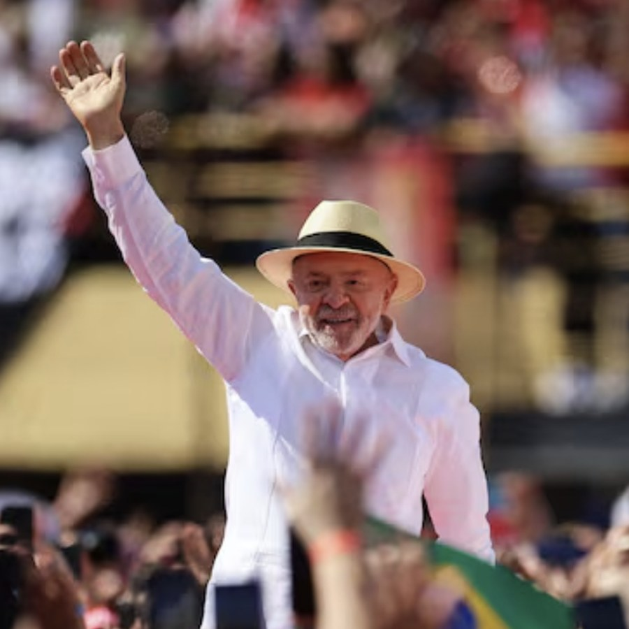
Conclusión
Lula necesita retener su voto, captar la mayoría de los votos de las candidaturas eliminadas y recuperar participación.
Contexto inicial
Qué explica el retroceso y dónde está la oportunidad
Decisión estratégica
Presentar la continuidad como una nueva etapa: proteger lo logrado, corregir lo pendiente y avanzar hacia el futuro.
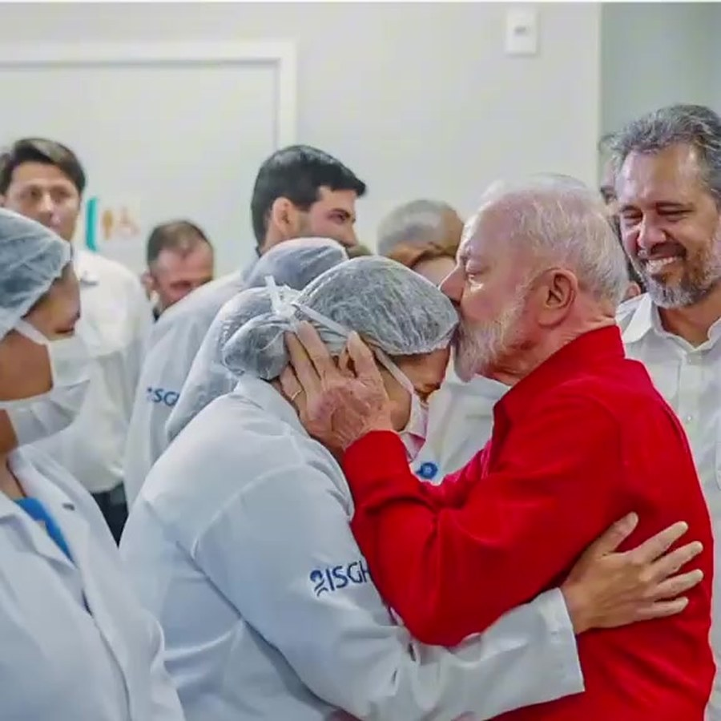
1
Problema, causa, evaluación y solución
1 Framing · «El cambio continúa»
1 Framing · «El cambio continúa»
Lo que los hogares ganaron desde 2023 está en riesgo por un recorte de gasto que no aclara qué programas afecta.
Dato que lo sostiene
El equipo de Flávio estudia una enmienda constitucional para recortar entre R$ 190 mil y R$ 300 mil millones y revocar cerca de 1.000 actos por decreto (Poder360, 10 de octubre).
Un candidato que dice una cosa y hace otra, y que pone primero a su familia: promete una amnistía «todavía en la transición» o el indulto para su padre.
Dato que lo sostiene
Entrevista de Flávio a TV Globo, 28 de agosto; acto en São Gonçalo, 10 de octubre.
Con Jair Bolsonaro (2019-2022), la pobreza bajó un punto (del 32,6 % al 31,6 %) y el ingreso real cayó un 3,7 % (de R$ 3.238 a R$ 3.117); con Lula, la pobreza bajó al 23,1 %, el desempleo cayó al 5,3 % y el ingreso subió a R$ 3.660.
Dato que lo sostiene
IBGE, Síntesis de Indicadores Sociales 2025 y PNAD Contínua.
Seguir con lo que funciona: Bolsa Família, SUS, Minha Casa Minha Vida, fin de la escala de trabajo 6×1 y alimentos más baratos.
Dato que lo sostiene
Propuestas de Lula en su programa de TV del 9 de octubre.
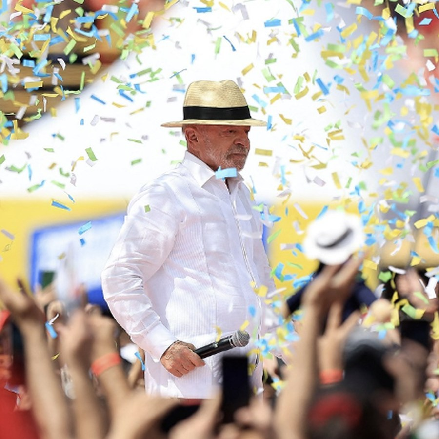
Mensaje central
Brasil avanzó, pero todavía falta.
La próxima etapa debe proteger lo conquistado, corregir lo pendiente y mejorar la vida cotidiana.
2 Caja de mensaje
3 Componentes del mensaje
¿Qué decimos?
Propuesta
«A mudança continua». Primera persona del plural, una sola cifra y una pregunta de contraste.
Evitar
Hablar solo del pasado, acumular cifras o usar varios lemas.
¿Cómo lo decimos?
Propuesta
Calidez, firmeza y esperanza. Lenguaje cotidiano, frases cortas e historias de cuidado.
Evitar
Gritos, dramatización, música de terror o saturación informativa.
¿Quién habla y cómo se ve?
Propuesta
Lula como portavoz y la ciudadanía como protagonista. Familias diversas en distintos contextos (por ejemplo, salud, educación e industria) dentro de un Brasil común.
Colores: rojo como acento, junto con la paleta brasileña y otros colores, por validar con la identidad oficial.
Elementos visuales: megáfono, vestimenta informal (camisa remangada, sombrero), trazos continuos y música.
Evitar
Lula aislado, exceso de imágenes de archivo, dirigentes y banderas partidarias.
4 Narrativa de campaña
Las familias trabajadoras que cuidan, se esfuerzan y quieren seguir progresando.
Proteger lo conquistado desde 2023 y avanzar hacia mejores ingresos, viviendas, salud, seguridad y tiempo compartido en familia.
El 25 de octubre se decide si Brasil sigue avanzando o regresa a políticas que debilitan la protección social.
Incertidumbre sobre el ajuste, contradicciones entre promesas y antecedentes, y concentración familiar del poder.
Lula escucha y acompaña; las políticas públicas crean oportunidades y la ciudadanía transforma su realidad.
La familia moviliza a su comunidad, protege lo conquistado y mantiene el cambio en marcha.
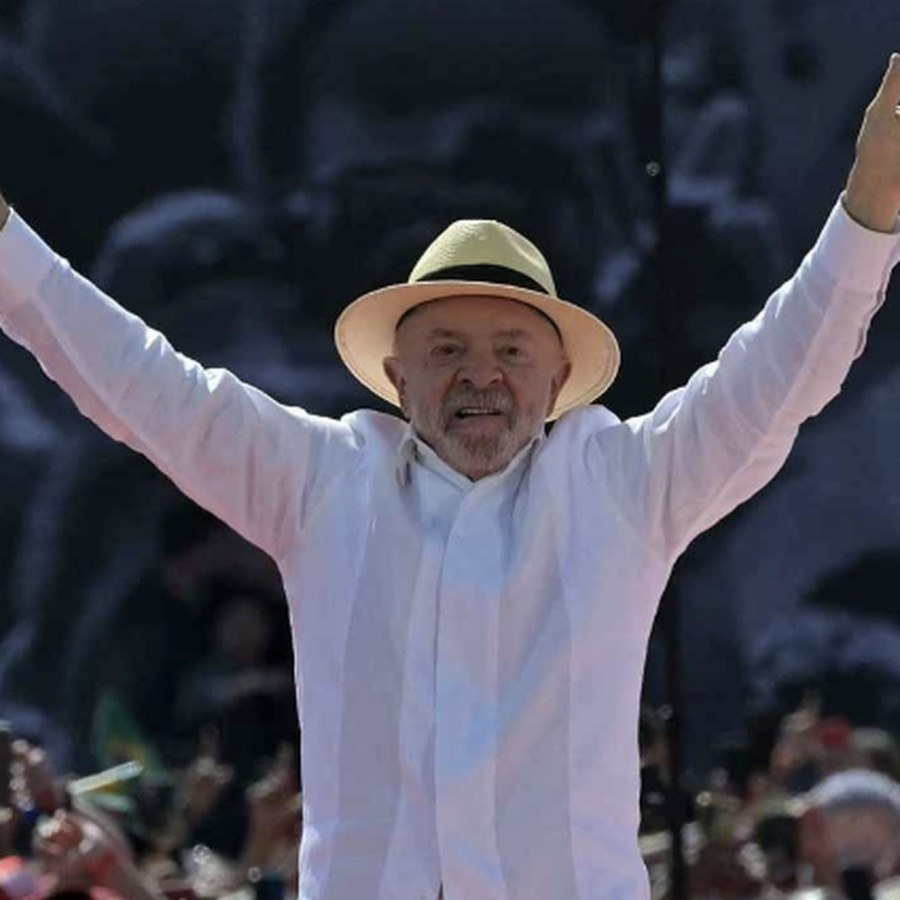
5 Eslogan y sistema de marca
Un cierre permanente y variantes con funciones distintas
A mudança continua.
Por todas as famílias.
El cambio continúa. Por todas las familias.
5 Eslogan y sistema de marca
Identidad
Paleta brasileña con rojo como acento. Familias diversas, vida cotidiana y ciudadanía antes que dirigentes.
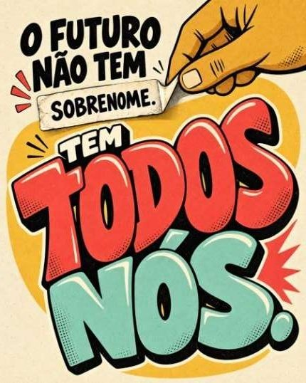
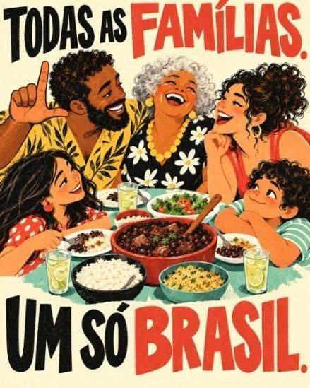
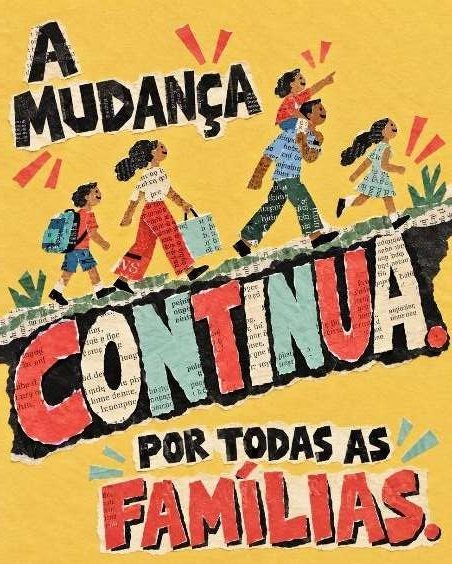
Ejemplos · Jingle
Anexos
Una cifra por pieza y una fuente identificable
Anexos
Protección familiar, trabajo, seguridad y presencia
1
Ingresos, alimentación, salud, vivienda, seguridad y tiempo para convivir.
Una familia protegida puede avanzar.
2
Proteger Bolsa Família, Farmácia Popular, Minha Casa Minha Vida, Mais Médicos, Pé-de-Meia, alimentación escolar y Gás do Povo.
Los beneficios son protección y derechos.
3
Avanzar hacia la jornada de 40 horas semanales sin reducción salarial.
Más tiempo para vivir, cuidar y progresar.
4
Coordinación policial, inteligencia y persecución financiera de las organizaciones criminales.
Firmeza con inteligencia y resultados.
5
Escucha territorial, radio local, debate televisado y comunicación digital coordinada.
Una campaña que escucha, conversa y responde.
Anexos
Respuesta directa, dato comprobable y propuesta propia
Anexos
Cinco promesas, cinco contradicciones
Anexos
Lula necesita sumar entre 5,8 y 7 millones de votos
Anexos
Disciplina para cada pieza y cada territorio
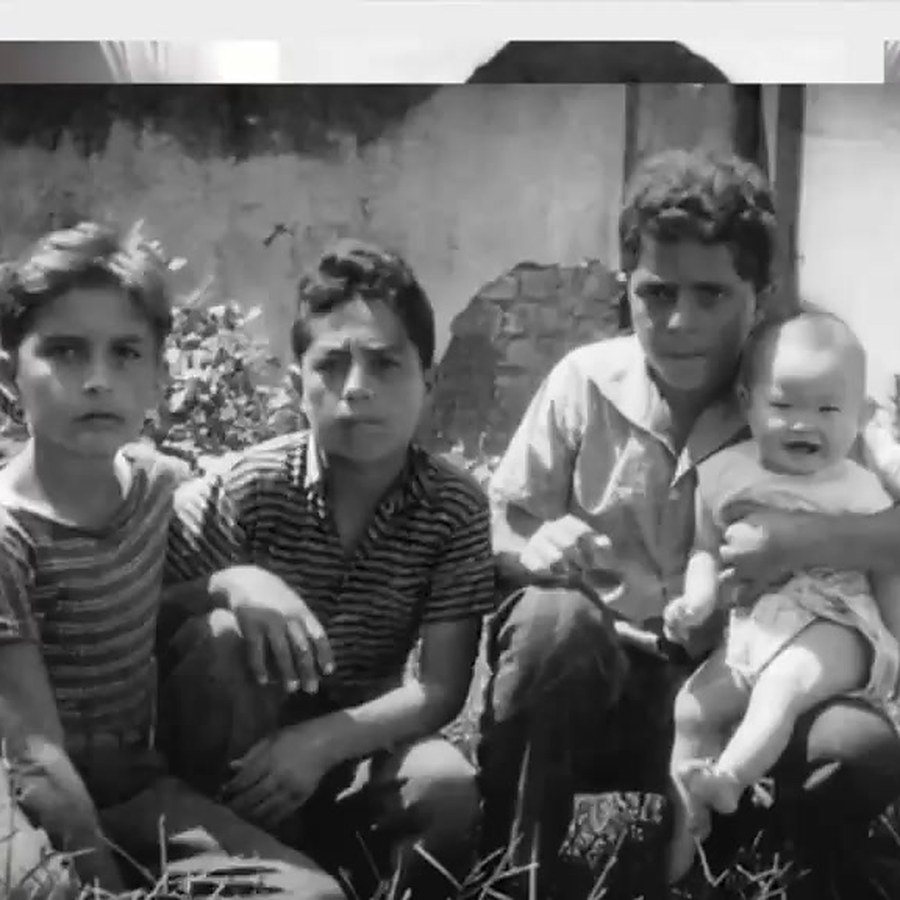
¿Qué familia defiende Flávio? ¿La suya? Nuestra familia son las familias pobres y trabajadoras de Brasil; su familia es la familia Bolsonaro.
Primero nuestra familia, después su familia
Comida
Fuente
IBGE, 2022 y 2024; Poder360, 10/10/2026
Pieza en español
«La prioridad de nuestra familia es la comida en la mesa: la pobreza bajó del 31,6 % al 23,1 %. La prioridad de su familia es recortar entre R$ 190 mil y R$ 300 mil millones sin decir de dónde.»
Pieza en portugués
«A prioridade da nossa família é comida na mesa: a pobreza caiu de 31,6% para 23,1%. A prioridade da família dele é cortar entre R$ 190 bilhões e R$ 300 bilhões sem dizer de onde.»
Empleo
Fuente
IBGE, PNAD Contínua; Folha vía Estado de Minas, 28/06/2026
Pieza en español
«La prioridad de nuestra familia es el empleo: el desempleo bajó del 9,6 % al 5,3 %. Él faltó al 43 % de las votaciones del Senado en 2026.»
Pieza en portugués
«A prioridade da nossa família é o emprego: o desemprego caiu de 9,6% para 5,3%. Ele faltou a 43% das votações do Senado em 2026.»
Salario
Fuente
IBGE, PNAD Contínua; Intercept Brasil, 07/10/2026 (PEC 12/2026)
Pieza en español
«La prioridad de nuestra familia es el salario: el ingreso real del trabajo subió de R$ 3.117 a R$ 3.660. Su familia defiende una jornada más corta con un salario más bajo.»
Pieza en portugués
«A prioridade da nossa família é o salário: a renda real do trabalho subiu de R$ 3.117 para R$ 3.660. A família dele defende jornada menor com salário menor.»
Primero nuestra familia, después su familia
Casa
Fuente
CartaCapital y Diário de Notícias, marzo de 2021
Pieza en español
«La prioridad de nuestra familia es la casa propia del Minha Casa Minha Vida. Su familia compró una mansión de R$ 5,97 millones con un patrimonio declarado de R$ 1,7 millones.»
Pieza en portugués
«A prioridade da nossa família é a casa própria do Minha Casa Minha Vida. A família dele comprou uma mansão de R$ 5,97 milhões com patrimônio declarado de R$ 1,7 milhão.»
Abuelos
Fuente
ICL Notícias, 07/10/2026
Pieza en español
«La prioridad de nuestra familia es que la abuela pobre cobre el BPC. Él votó dos veces, en 2020, para que el BPC no llegara a más familias.»
Pieza en portugués
«A prioridade da nossa família é que a avó pobre receba o BPC. Ele votou duas vezes, em 2020, para que o BPC não chegasse a mais famílias.»
Primero nuestra familia, después su familia
Padre
Fuente
TV Globo, 28/08/2026; Euronews, 29/08/2026
Pieza en español
«La prioridad de nuestra familia es trabajar y vivir en paz. La prioridad de su familia es el indulto para un padre condenado a 27 años por intento de golpe.»
Pieza en portugués
«A prioridade da nossa família é trabalhar e viver em paz. A prioridade da família dele é o indulto para um pai condenado a 27 anos por tentativa de golpe.»
Seguridad
Fuente
Revista Oeste, 12/08/2026
Pieza en español
«La prioridad de nuestra familia es volver segura a casa. Su equipo quiere más armas dentro de casa.»
Pieza en portugués
«A prioridade da nossa família é voltar em segurança para casa. A equipe dele quer mais armas dentro de casa.»
Lado B
La tentación de Flávio, el pecado y el hecho que la desmiente; la serpiente y la manzana del Edén van solo en la imagen
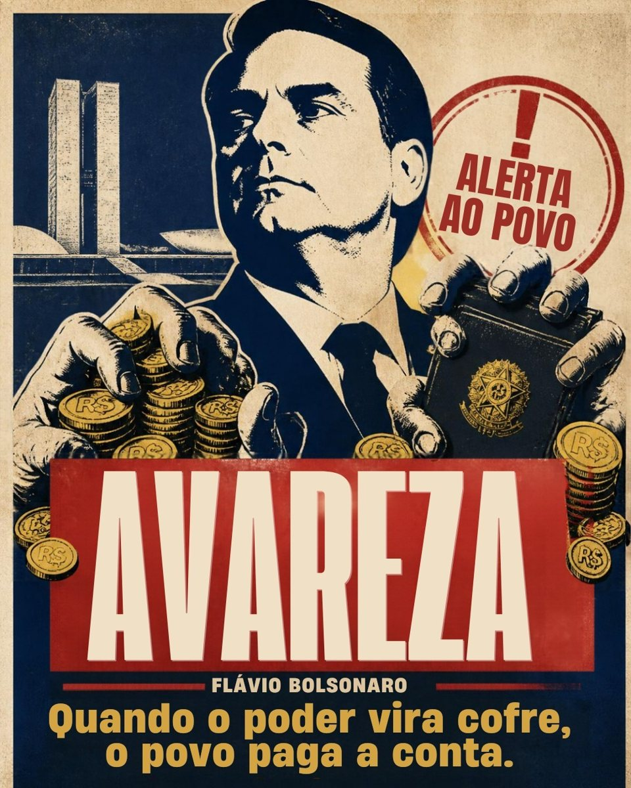
Campaña ciudadana (lado B): los pecados capitales
La tentación (lo que promete)
«El Bolsa Família es sagrado, nadie lo toca» (8 de octubre de 2026)
Pieza en español
«Te promete que nadie toca el Bolsa Família. Votó para negarles el BPC a ancianos pobres y personas con discapacidad.»
Pieza en portugués
«Promete que ninguém toca no Bolsa Família. Votou para negar o BPC a idosos pobres e pessoas com deficiência.»
Hecho y fuente
En marzo y noviembre de 2020 votó por mantener el veto que impedía subir el límite de ingreso del BPC de un cuarto a medio salario mínimo (ICL Notícias, 7 de octubre de 2026).
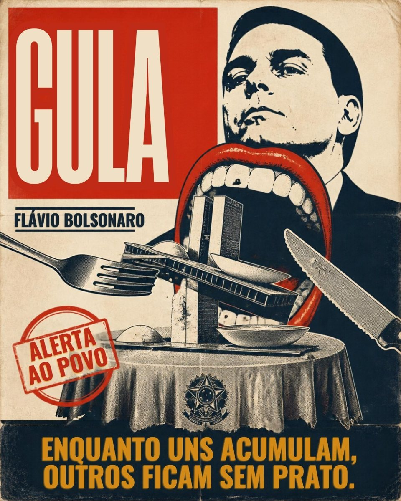
Campaña ciudadana (lado B): los pecados capitales
La tentación (lo que promete)
«Libertad para que el trabajador elija su jornada» (6 de octubre)
Pieza en español
«Te ofrece libertad para elegir tu jornada. Quiere comerse tu salario: menos horas, menos sueldo.»
Pieza en portugués
«Oferece liberdade para escolher sua jornada. Quer comer o seu salário: menos horas, menos salário.»
Hecho y fuente
Defiende la PEC 12/2026, que permite reducir la jornada con una reducción proporcional del salario, las vacaciones, el aguinaldo y el fondo de garantía mediante acuerdo individual (Intercept Brasil, 7 de octubre de 2026).
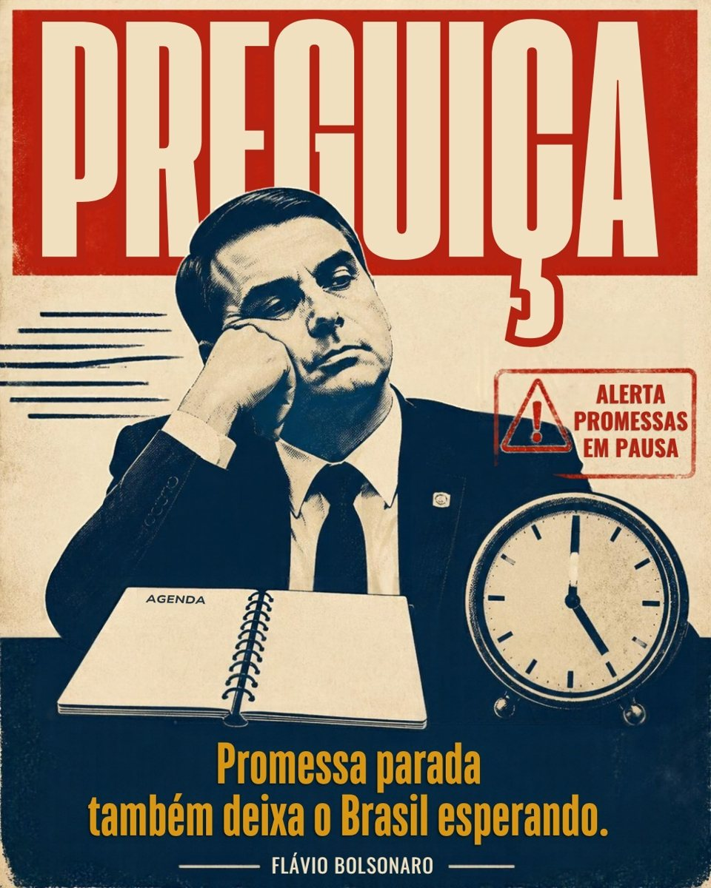
Campaña ciudadana (lado B): los pecados capitales
La tentación (lo que promete)
«Un nuevo presidente para un nuevo Brasil» (9 de octubre)
Pieza en español
«Promete trabajar por un nuevo Brasil. Faltó al 43 % de las votaciones del Senado en 2026.»
Pieza en portugués
«Promete trabalhar por um novo Brasil. Faltou a 43% das votações do Senado em 2026.»
Hecho y fuente
Estuvo ausente o no votó en el 43 % de las votaciones nominales entre el 24 de febrero y el 16 de junio; el promedio fue del 20 % (Folha, publicado por Estado de Minas, 28 de junio de 2026).
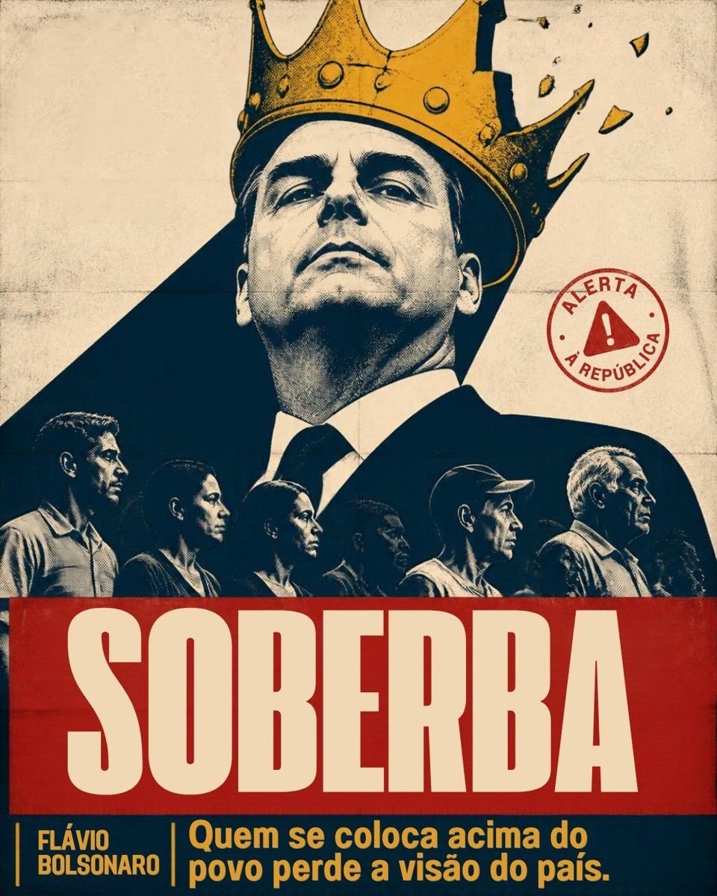
Campaña ciudadana (lado B): los pecados capitales
La tentación (lo que promete)
«Entregar Brasil en las manos de Dios» (10 de octubre)
Pieza en español
«Dice que entregará Brasil en las manos de Dios. Anuncia que un condenado por golpe le pondrá la banda presidencial.»
Pieza en portugués
«Diz que vai entregar o Brasil nas mãos de Deus. Anuncia que um condenado por golpe vai lhe colocar a faixa presidencial.»
Hecho y fuente
«Verán a Jair Messias Bolsonaro poniéndome la banda presidencial» (acto en São Gonçalo, 10 de octubre de 2026, CartaCapital).
Campaña ciudadana (lado B): los pecados capitales
La tentación (lo que promete)
Mano dura contra las facciones criminales y cinco nuevas cárceles federales (programa del 9 de octubre)
Pieza en español
«Te promete seguridad. Quiere más armas dentro de casa.»
Pieza en portugués
«Promete segurança. Quer mais armas dentro de casa.»
Hecho y fuente
El equipo de campaña de Flávio propone revisar las restricciones del Gobierno de Lula y aprobar una ley que garantice la tenencia de armas y prohíba que el Estado las confisque (Revista Oeste, 12 de agosto de 2026).
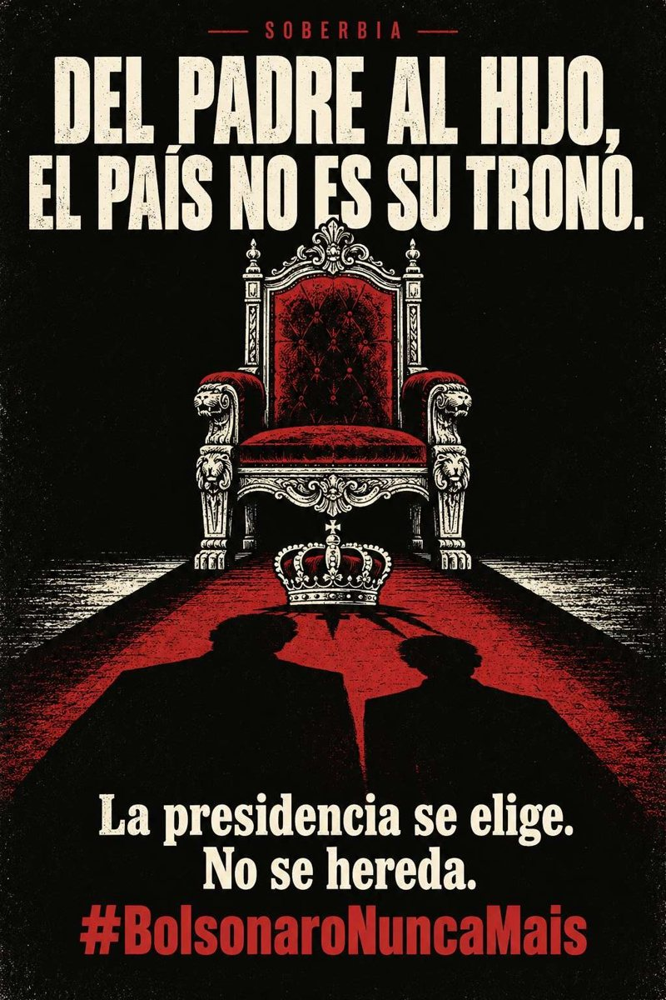
A mudança
continua.
Por todas as famílias.
El cambio continúa. Por todas las familias.
Comunicación política, storytelling y narrativa
Diplomatura en Campañas Electorales, Estrategia Política e Inteligencia Artificial
Grupo 1